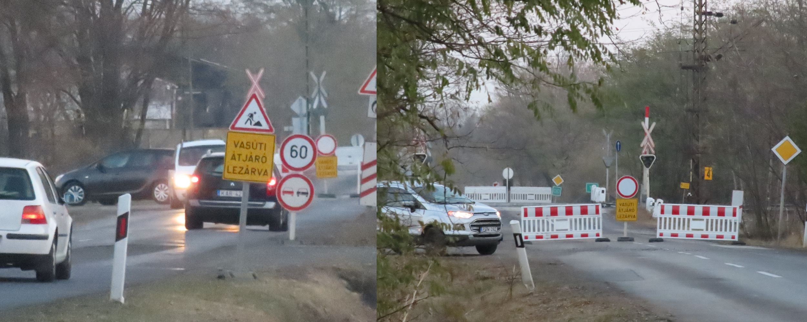
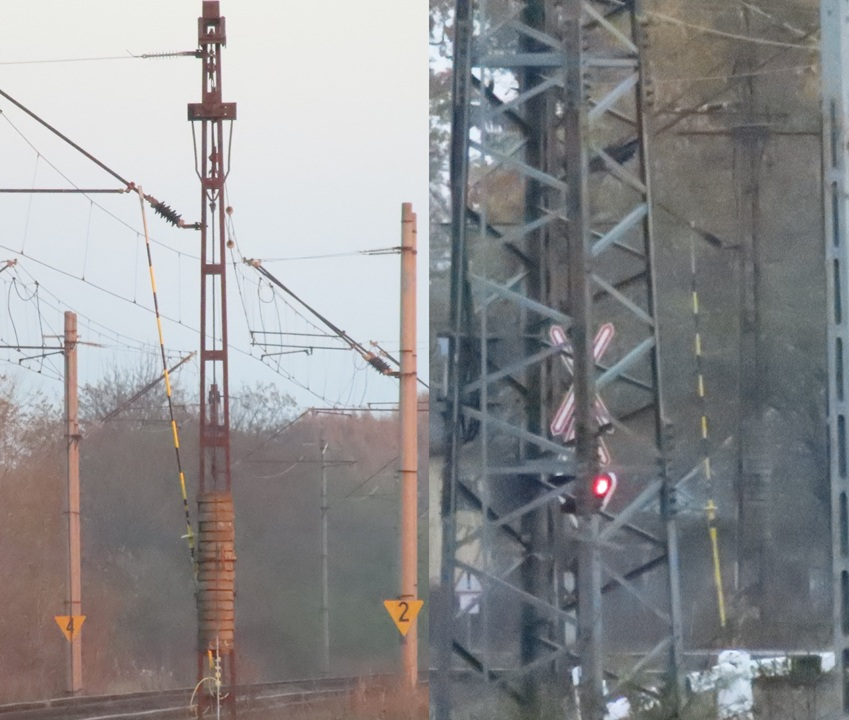

Ebben a dokumentációban bemutatom a 311-es út tápiószelei átjárójában 2026.11.07-08 hétvégén végzett munkálatokat!
A 69 percet késő Tisza EC
A táblák messziről, ennél közelebb nem mentem.
Földelőpálcák a muszályi átjáróban, illetve Tápiószelén